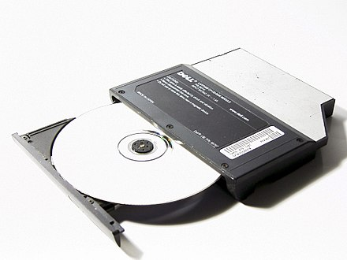
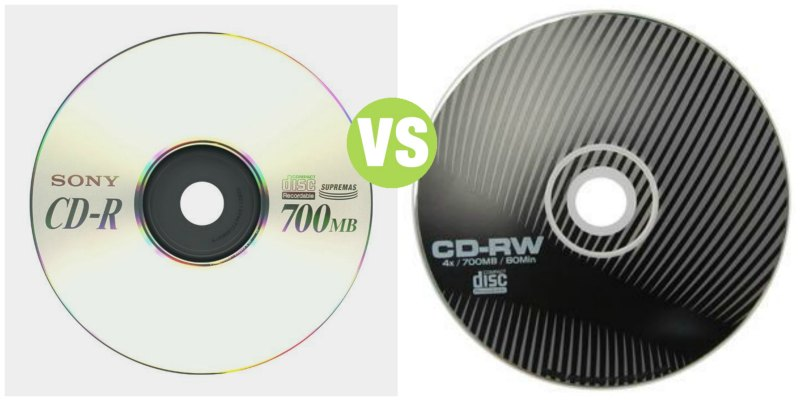

Why it represents a milestone?

A CD-ROM (complete name, compact disc read-only memory) is a type of compact disc that contains data. CD-ROM is one of the extensions of CD. This type can only be read but not recorded or erased. The successors of the floppy disks, CD-ROMs with their memory capacity and speed of access to information were the first devices to meet the growing demands.
A CD-ROM is an extension of Compact disc and it is able to holds 650MB or 700MB of data; these technical specifications are collected in the “Yellow book”. The yellow book is an extension of ‘Red book”; Both are inside of “Rainbow book”, that contains all technical specifications.

There are two CD-Rom formats that are: CD-Rs are read-only CD-rom, in which you cannot modify the existing data on the disc. A peculiarity and that they are characterized by a silver colour when they are created by the distribution companies. On CD-RWs data can be written, rewritten or deleted several times. Data can also be recorded several times (multi-session). Once written, the data can be edited in subsequent recording sessions. The peculiarity of CD-RWs is their dark blue colour.
Sony and Philips show the first Compact Disc for an audience of specialists only (1979). The first commercial compact disc to be produced was a Waltz recording (1982). The first lunch of CD technology took place in Japan and then in Europe and North America (1983). The CD-ROM is introduced (1985). Over 400 millions CD copies were sold (1988). Philips and Sony introduce recordable CDs to the public (1990). The CD-ROM has given way to USB sticks and fully online file storage and sending systems (2000). Over 2 billions CD copies were sold (2007). Competition of digital music and format CD (2014).